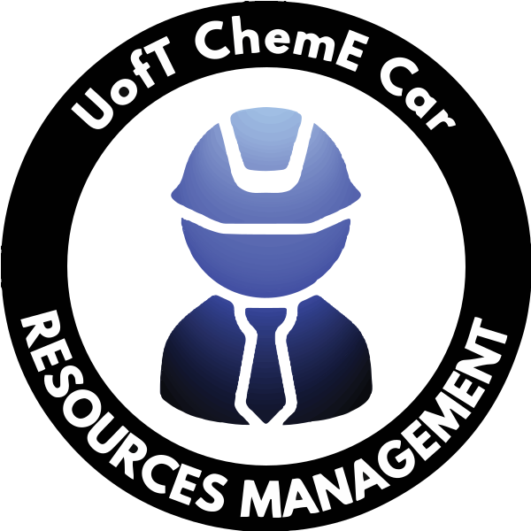

RMT is responsible for acquiring, leveraging, and managing ChemE Car Resources. Our primary goal is to provide ongoing support to the design team, financially and logistically,
so that they are able to compete in the Regional Competition. In order to do so, we strive to maintain open communication channels with all engineering faculty and sponsors involved.
President Omar Hamdy
Responsible for strategic decisions to achieve club’s mission and vision. Tasks include but not limited to; delegating tasks, supporting team members with their tasks, and ensuring that the team achieves its goals.
VP Operations Julia Lobo
Responsible for all club operations that deal with human capital and finances. Tasks include but not limited to; preparing detailed plans to achieve milestones, and applying quality control measures.
VP Relations Twinkle Choubey
Responsible for club interactions with stakeholders, such as faculty members and club sponsors. Tasks include but not limited to; preparing detailed plans to achieve milestones, and applying quality control measures.
Sponsorship Claire Gao
Responsible for preparing all documents pertaining to sponsors. Tasks include but not limited to; researching potential sponsors,and preparing a sponsorship packages
Logistics Arth Patel
Responsible for all logistical operations. Tasks include but are not limited to; booking rooms, and organizing arrangements for the competition including accommodation, and travel.
Human Resources Sarah Moasser
Responsible for recruitment and safety procedures. Tasks include but are not limited to; ensuring that members have received proper safety training and are eligible to work in a laboratory.
Design Captain Cyril Ferrer
Responsible for overseeing sub-design teams operations. Tasks include but not limited to; compiling design documentations, ensuring team milestones are met, and monitoring safety protocols executed by sub-design team captains.
Finance Rosten Role
Responsible for all club finances. Tasks include but not limited to; preparing funding applications, club financial reports, and organizing and managing reimbursements
Webmaster Daniel Kim
Responsible for maintaining club’s website. Tasks include; ensuring content is accurate and up to date, troubleshooting website performance issues, and assisting in marketing and advertising promotional activity.
Events Manager Matthew Kerner
Responsible for planning events, overseeing their operations, and their logistical needs. Tasks include but not limited to; create events that align with club’s mission and vision, documenting event activities, evaluating their
performance, and propose future improvements.